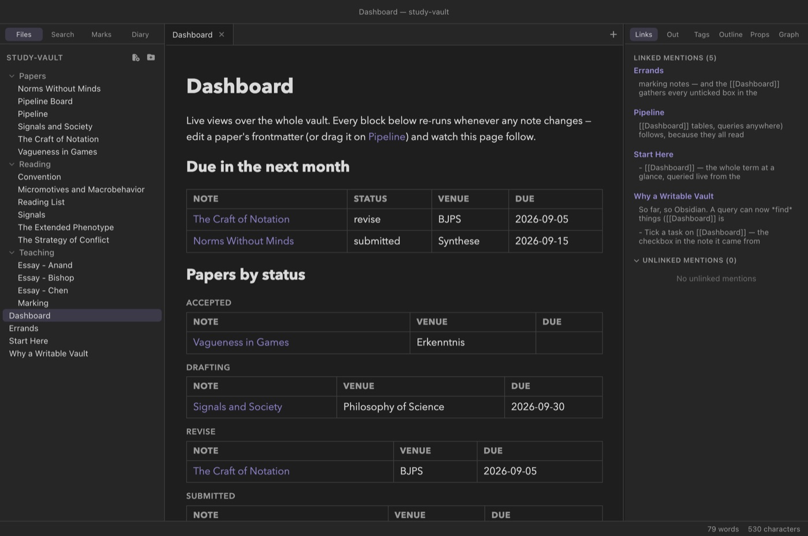

The vault as a database
Queries
Your notes already carry data — frontmatter
properties and inline fields record what each note knows about
itself. A query fence collects that data across the whole
vault into a live table or list: every paper and its status, every book
and its rating, everything due this month. And because Clew's query
views are writable, the table is not a report you look at but
a surface you act on — retype a cell and the note it came from is
rewritten.
Notes as rows, fields as columns
Think of the vault as a database whose rows are notes. Each note contributes its fields from three places:
- Frontmatter — every key in the
---block:status,due,rating, whatever you have defined. - Inline fields — Dataview-style
Key:: valuelines and bracketed[key:: value]fields in the body. To a query these are indistinguishable from frontmatter; when the same key exists in both, frontmatter wins. - Built-ins — three fields every note has:
name(the file name without its extension),path(vault-relative), andmodified(the file's last-modified date, shown in ISO form,2026-08-23).
A query scans every Markdown note in the vault
(.md and .jmd files), skipping hidden folders
and machinery — .obsidian/, .clew/,
.git/, node_modules/, and
.trash/ never contribute rows. The scan happens at render
time, against the live files, which is what makes the views below
dashboards rather than snapshots.

study-vault Dashboard: a due-soon table
built with date arithmetic, and the papers grouped by
status. Every block re-runs whenever any note in the
vault changes.A first query
A query is a fenced block whose body is a series of
key: value lines. With no other clauses the result is a
list of links (an explicit list: line requests that shape
by name). The smallest useful query names a folder:
You write
```query
from: Papers
```Reading mode shows
With no other clauses you get the default output — a bulleted list of links, one per matching note, in alphabetical order by name. Every note in the folder counts, including Pipeline, the note that holds the folder's kanban board; filtering clauses (below) are how you narrow that down. Lines in the fence body that are not a recognised clause are ignored, and a query that matches nothing renders the message “No notes match this query.”
Tables
A table: line switches the output to a table and names the
columns, comma-separated. The first column is always
Note — a link to each matching note — and the rest are
fields:
You write
```query
table: author, status, rating
from: Reading
where: author
sort: rating desc
```Reading mode shows
| Note | author | status | rating |
|---|---|---|---|
| The Strategy of Conflict | Thomas Schelling | finished | 10 |
| Convention | David Lewis | finished | 9 |
| Micromotives and Macrobehavior | Thomas Schelling | reading | 8 |
| Signals | Brian Skyrms | reading | 8 |
| The Extended Phenotype | Richard Dawkins | queued |
This is the study-vault reading list. Notice two things.
The Extended Phenotype has no rating yet, so its
cell is empty and it sorts to the bottom — notes missing the sort field
always sort last. And the where: author line is doing
quiet work: without it, the Reading List note itself (which lives in
the same folder but has no author) would appear as a row
of empty cells. A bare where: with just a field name is an
existence test — keep only notes where the field is present and not
empty.
Column values render as you would expect: missing fields are blank,
list values are joined with commas, and modified shows the
ISO date. Any column may also be one of the built-ins —
table: path, modified is a perfectly good audit view.
Choosing notes: from, tag, where
Three clauses select which notes become rows. They combine — a note must satisfy all of them.
from: — by folder
from: Papers keeps notes in the Papers folder
and any folder beneath it. The path is vault-relative and
matched as written (a trailing slash is tolerated:
from: Papers/ means the same thing).
tag: — by tag
tag: #active (the # is optional) keeps notes
whose tags property contains that tag,
case-insensitively.
tag: filter reads the note's
tags frontmatter property — a #hashtag in
the body of a note puts it in the tag pane, but does not make it
match a query's tag: clause. If you want a note to
answer tag queries, put the tag in its frontmatter.
where: — by field
A where: clause compares one field against one value:
You write
```query
table: course, marked, grade
from: Teaching
where: marked = false
```Reading mode shows
| Note | course | marked | grade |
|---|---|---|---|
| Essay - Anand | PHIL201 | false | |
| Essay - Chen | PHIL201 | false |
That is the study-vault marking pile: as essays are
marked, they leave this table on their own. The operators are
=, !=, >, <,
>=, <=, and contains, plus
the bare existence form (where: due). The comparison rules
are worth knowing precisely:
- A note whose field is missing never matches a comparison — you do not need a separate existence guard just to compare.
- When both the note's value and the query's value are numbers, the
comparison is numeric:
where: rating >= 9means what arithmetic says it means. - Otherwise both sides are compared as case-insensitive text —
where: venue = synthesematchesvenue: Synthese. Text ordering is what makes ISO dates comparable (below). containstests list membership when the field is a list (where: tags contains fun), and substring containment when it is text — both case-insensitive.
where: may be repeated, and every clause must hold — the
clauses are ANDed. There is no OR; when you need one, two queries side
by side is the honest spelling.
Dates and date arithmetic
Because dates are ISO strings (2026-09-15) and text
comparison is lexicographic, date fields already sort and compare
correctly with no special machinery. What the query language adds is a
way to say now: when the value side of a
where: is a date expression, it is resolved to a concrete
ISO date at the moment the query renders.
The full grammar: the word today, optionally followed by
+ or - and a whole number of
days, weeks, months,
or years. Case does not matter and spacing is free —
today+7d and today + 7 d are the same. So:
today, today + 31d, today - 2w,
today + 6m, today - 1y. Anything else on the
value side is treated as a literal value, so comparing against a fixed
date — where: due < 2026-10-01 — also works.
The study-vault Dashboard's “due in the next month” view
combines an existence test with a window:
You write
```query
table: status, venue, due
where: due
where: due < today + 31d
sort: due asc
```Reading mode shows
| Note | status | venue | due |
|---|---|---|---|
| The Craft of Notation | revise | BJPS | 2026-09-05 |
| Norms Without Minds | submitted | Synthese | 2026-09-15 |
(Rendered in late August 2026: Signals and Society, due 30
September, falls outside the 31-day window, and papers with no
due at all are kept out by the bare where:
due.) Since today is resolved when the note
renders, and query notes re-render as the vault
changes, a dashboard like this stays current without ever being
edited.
Sorting, grouping, limiting
sort: fieldorsort: field desc- Order rows by one field, ascending unless you say
desc. Numbers sort numerically when both values are numbers; everything else sorts as text. Notes missing the field sort last either way. Without asort:clause, rows come out alphabetically by note name. Sorting onmodifiedorders by the ISO date, so it distinguishes days, not minutes. group: field- Split the output into one section per distinct value of a field,
each section headed by the value and holding its own list or table.
Sections are ordered alphabetically by their label. Notes where the
field is missing or empty gather under a “—” section, which sorts
after the lettered ones — a useful catch-all for strays. A list
value groups under its joined text (
a, b), not one section per item. The Dashboard's papers-by-status view is exactlyfrom: Papers+group: status— and the Pipeline board note itself, having nostatus, turns up under “—”. limit: n- Keep only the first n rows, applied after filtering and
sorting (and before grouping).
sort: modified descwithlimit: 10is the classic “recently touched notes” block.
Editable cells: the writable database
Everything so far, a read-only query system could do. Clew's tables go one step further: the cells are editable, and edits are written into the source notes.
Click any field cell in a query table and it becomes an input. Type the new value and press Enter (or click away) to commit; Esc cancels. On commit, Clew writes the value into the note the row came from:
- If the field lives in frontmatter, the note's frontmatter is rewritten through the same parse/serialise machinery as the properties panel. The value is re-typed to match what it replaces — numbers stay numbers, booleans stay booleans, and a list field re-splits your comma-separated input back into a list.
- If the field is an inline field, Clew rewrites
the
Key:: valuetext on the exact line it came from — mid-sentence bracketed fields included. The prose around it is untouched. - If the note does not have the field at all — an
empty cell — committing a value creates the property in that note's
frontmatter. Typing into the blank
ratingcell of The Extended Phenotype is how that book gets its rating.
The built-in columns (name, path,
modified) are facts about the file rather than fields in
it, so they are not editable. And the write respects the
frontmatter safety valve: a note
whose frontmatter is outside the editable subset refuses the edit with
a notice instead of risking the block. An edit can also fail cleanly if
the note changed underneath it — say, the inline field's line moved —
in which case Clew reports it rather than guessing.
study-vault Marking note is just a
table of essays with where: marked = false — you put the
grade straight into the table and type true into the
marked cell, and the row leaves the pile because the
file now says so. No app state, no separate database: the
edit lands in the note, and every other view follows.
Live views
An open note that contains a query, tasks, or kanban fence re-renders
whenever any note in the vault changes — not just when
its own file does. Edit a paper's frontmatter, drag a kanban card, tick
a task, or let a sync tool rewrite a file behind Clew's back, and every
visible query view re-runs against the new state of the files. A note
of query blocks is therefore a real-time dashboard; the
study-vault Dashboard note is nothing else.
The same holds on the canvas: a note embedded on a canvas is a live preview, so a query table or kanban board embedded there stays current, and its cells and cards remain editable — edits route back to the source notes exactly as they do in reading mode.
Scripting: the vault global
The fences cover the common shapes. For everything else, jmarkdown
script blocks — code the engine runs while it builds the note — see a
global vault object with three methods:
In a script block
const active = vault.query({ from: 'Projects', where: 'status = active' });
const everything = vault.notes();
const open = vault.tasks();vault.query(spec)- Run a query and return the matching notes. The spec is either a
string in the fence syntax (
'from: Papers\nwhere: status = drafting') or an object withfrom,tag,sort({ field, dir }),limit, andwhere— the latter a single clause or an array, each clause either a fence-syntax string ('rating >= 9') or a pre-parsed object. vault.notes()- Every note in the vault, unfiltered.
vault.tasks(spec)- Checkbox items across the vault, each with its text, done state,
source line, and the path and name of the note it lives in. The
optional spec is a string in the tasks-fence syntax; with no spec you
get the un-done tasks (the fence's default), and
vault.tasks('all')returns everything.
Each returned note is an object carrying path,
name, modified (a millisecond timestamp
here, not the ISO date), text (the full source), and
fm — the merged frontmatter-plus-inline-fields record.
From there you can build any report the engine can render. This is the
programmable tier of the query system, the counterpart of Dataview's
dataviewjs.
Queries and export
Query views are a live feature of the app. When you publish a vault as a website, every query, tasks, and kanban view is baked into the exported pages as static HTML — the site shows the vault as it stood at export time. Single-note exports run under your own jmarkdown configuration rather than Clew's preview setup, so query fences are not evaluated there.
query fence is a fenced code block, so Obsidian shows
the query source as a code block — harmless, and honest about what
the note contains. Everything the query reads and writes is standard,
Obsidian-shaped data: plain frontmatter and body text. Edit a cell in
Clew and Obsidian sees an ordinary frontmatter change; there is no
Clew-only state anywhere in the note. The fence dialect itself is
Clew's own — close to Dataview in spirit, but not Dataview's query
language.
Reference
| Clause | Meaning |
|---|---|
list: | Output a bulleted list of note links — the default when no table: is given. |
table: f1, f2, … | Output a table with a leading Note link column plus the named field columns. |
from: Folder | Keep notes in this vault-relative folder and its subfolders. |
tag: #name | Keep notes whose tags property contains the tag (# optional, case-insensitive). |
where: field | Keep notes where the field exists and is not empty. Repeatable; all clauses must hold. |
where: field op value | Keep notes where the comparison holds. Operators: = != > < >= <= contains. |
sort: field [asc|desc] | Order rows by a field (default asc; missing values last; default order is by name). |
group: field | One section per distinct value, ordered by label; missing/empty values under “—”. |
limit: n | Keep the first n rows (after sorting, before grouping). |
| Field | Built-in value | Editable |
|---|---|---|
name | File name without extension | No |
path | Vault-relative path | No |
modified | Last-modified date, ISO form | No |
| anything else | Frontmatter or inline field | Yes — writes back to the source note |
| Date expression | Resolves to |
|---|---|
today | Today's date, ISO form. |
today + Nd / today - Nd | N days from today, forward or back. |
today ± Nw | N weeks. |
today ± Nm | N calendar months. |
today ± Ny | N years. |
See also
- Properties and metadata — where the data lives, and the frontmatter safety valve the writes respect.
- Tasks and kanban — the other two database fences, built on the same scan.
- The canvas — query views inside embedded notes.
- Publishing as a website — query views baked static.
- The Note API — the other programmable surface: scripts that run in the rendered page rather than at build time.